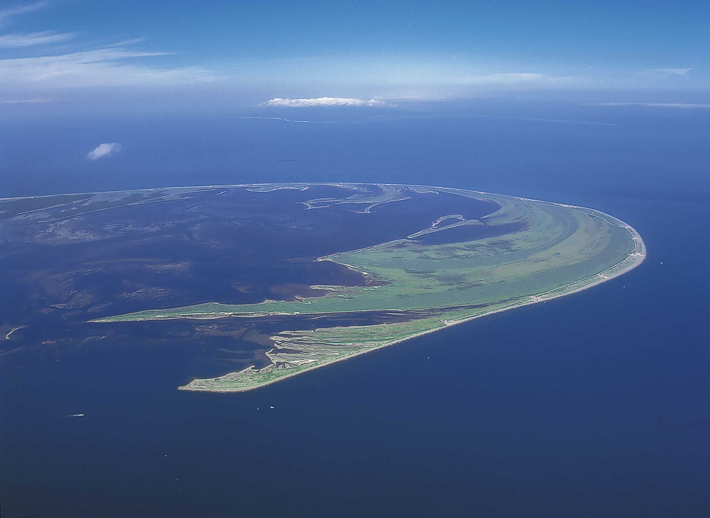

根室海峡沿岸中央部に突き出る野付半島は、全長 28km に及ぶ日本最大の砂嘴 （さし）です。
左右に海が迫る野付の一本道を行くと、トドワラ、ナラワラという立ち枯れた樹林が広がり、
その荒涼とした光景はまさに “最果ての地” をイメージさせます。
しかし、ここは古代北方文化の時代から江戸時代に至るまで国後島への渡海拠点となり、
その先の千島列島を通じて世界に開かれていた日本の東門として、
絶えず人々が往来する「道」の役割を担ってきたのです。その賑わいは、
かつて先端に歓楽の場があったという『幻のまちキラク伝説』として語り継がれています。
時代を越え人々の往来を誘ったのは、根室海峡最大の産物である鮭でした。

野付半島の中ほどに広がる「ナラワラ」は、海水の侵食でミズナラが立ち枯れたもの